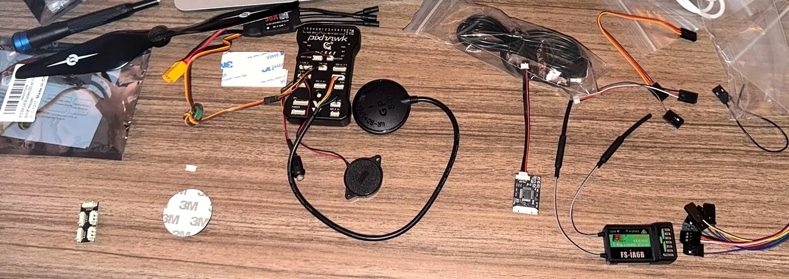

Personal projects · Self-funded · Ongoing
Three UAVs, designed and built on my own
Three builds on my own time and money: an autonomous mapping UAV, a quadcopter frame that I designed and then tuned from its own flight logs, and a thermal-imaging drone for crop irrigation that is on my desk now.
- Status
- Ongoing third build in assembly
- My part
- All of it: component trade studies, frame design and FEA, Pixhawk integration, mission planning, and tuning from flight logs.
- Team
- Solo. Nobody assigns these; I set the problem and pay for the parts.
- Tools
- Pixhawk · Mission Planner · SolidWorks · ANSYS Discovery · Simulink · MATLAB
Where it stands · November 2026
Two of the builds have flown. The third is being assembled.
- 30%
cut from the mapping UAV's build cost by a component trade study
Parts cost - SF ≥ 1.5
at the arm root of the quadcopter frame, held with no added mass
Simulated - 12logs
of flight data behind the PID retune that removed a hover oscillation
Flight logs - 3frames
designed in SolidWorks, each checked in ANSYS Discovery
Simulated
Still open: the thermal-imaging drone has not flown. Its airframe is going together and its avionics are on the bench, shown under on the bench now.
01The brief
Nobody assigns these. I set the problem, pay for the parts and find the answers.
| Build | What it is for | Tools | Status |
|---|---|---|---|
| Mapping UAV | Flies a grid over a field on its own and brings back the photos for a stitched map. | Pixhawk, Mission Planner, MATLAB | Flown. Autonomous waypoint missions. |
| Quadcopter frame and controls | A frame I designed and checked in simulation, then tuned in flight from its own logs. | SolidWorks, ANSYS Discovery, Simulink | Flown. Retuned from 12 logs. |
| Thermal irrigation drone | Carries a thermal camera over farmland to flag the patches getting less water than the rest of the field. | Pixhawk | In assembly. Not flown. |
I am self-taught on all three and I handle each one end to end. The third build is aimed at field monitoring on farmland in Morocco, where a thermal map can show which parts of a field the irrigation is missing.
02Constraint · my own money
Decide on paper, then buy
On a self-funded build, every component is a purchase I have to justify to myself. Propulsion, battery and frame also depend on each other, so choosing them one at a time means paying for the mismatch later.
Before ordering anything for the mapping UAV I ran component-level trade studies across all three together. The build cost came down 30% Parts cost.
I also chose motors, propellers and battery parameters through propulsion analysis and weight reduction, with a target of about 30% more flight endurance Target. That is a target. This page does not report a measured endurance.
03Integration · mapping UAV
An autopilot I can take back
An autopilot only works when the flight controller, GPS and compass, telemetry radio, speed controllers and RC link all agree with each other. I integrated them around a Pixhawk and planned the missions in Mission Planner.
The aircraft flies fully autonomous waypoint missions Tested on hardware. For mapping I planned grid missions for orthomosaic maps, tuning image overlap, altitude and flight path together. Those three are one decision: more overlap stitches more reliably but costs passes, and passes cost battery.
Decision · who has the aircraft
An aircraft that flies itself still needs a way for me to take it back. I kept the RC link live as a manual override through every autonomous flight, and treated it as part of the design from the start.
04Structure · quadcopter frame
Change the shape before adding mass
The root of each arm carries the load from its motor. The easy fix for a weak root is more material, and more material is more weight to lift.
I iterated three frame designs in SolidWorks and checked each one in ANSYS Discovery. The result holds a safety factor of at least 1.5 at the arm root, with no added mass Simulated.
05Controls · quadcopter
A hover that would not settle
The quadcopter had a persistent oscillation in hover. The logs record what the vehicle actually did, so I tuned from those and not from how the flight felt.
I analyzed 12 flight logs and retuned the PID gains in Simulink. The oscillation is gone Flight logs.
06Current build · thermal irrigation drone
On the bench now
The third build will carry a thermal camera. The airframe is being assembled and the avionics are on my desk. Nothing in this section has flown.

1 2 3 4 5 6 7- 1Propeller
- 230 A ESC. Drives one motor.
- 3Pixhawk. The flight controller.
- 4GPS and compass module
- 5Buzzer. Status tones.
- 6I2C splitter. Shares the sensor bus.
- 7FlySky FS-iA6B. RC receiver.
| Item | State |
|---|---|
| Airframe assembly | Under way |
| Flight controller, GPS, ESCs, RC receiver | On the bench, Fig. 2.2 |
| Thermal camera payload | Planned |
| Flights over farmland | Planned |
07Results and limits
What these results do and do not show
- The safety factor is a simulation result. It comes from ANSYS Discovery at the arm root, and it is not a load test.
- The tuning result comes from flight logs. Twelve of them, recorded on the quadcopter itself.
- The thermal drone's mission is a plan. No part of it has been demonstrated in flight.
- The endurance gain is a target. I have not measured it, so I do not claim it.
08What I took from it
Four things the builds taught me
- Decide on paper, then buy.A trade study is cheap. The wrong motor is not.
- The log is the truth.Twelve flight logs pointed at the fix for a hover that would not settle.
- Autonomy needs a way back.The manual override is part of the design from the start.
- Shape before mass.Three iterations found the stiffness without paying for it in weight.